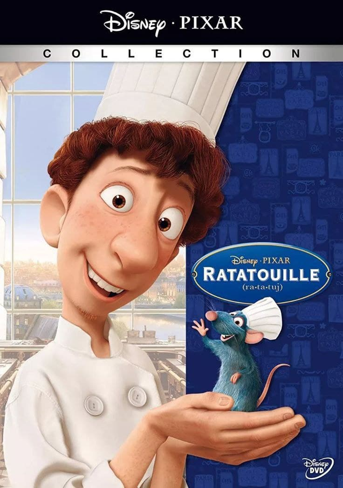
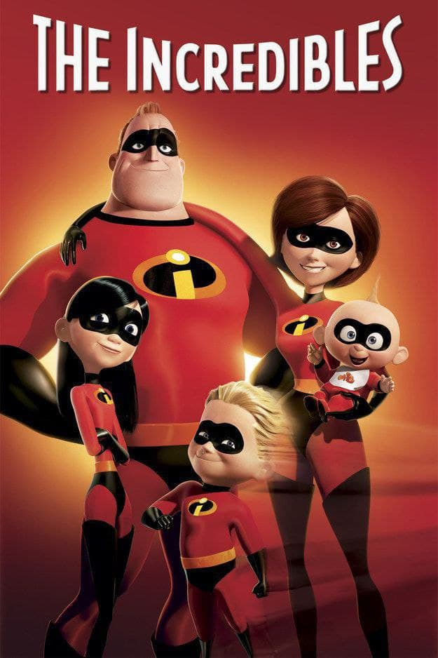
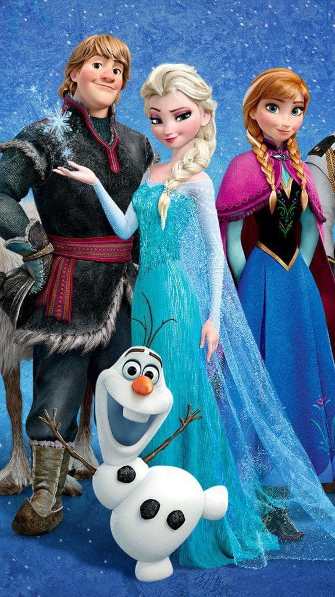
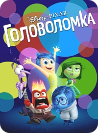
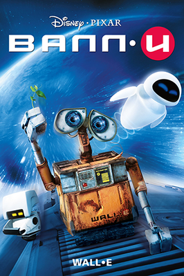
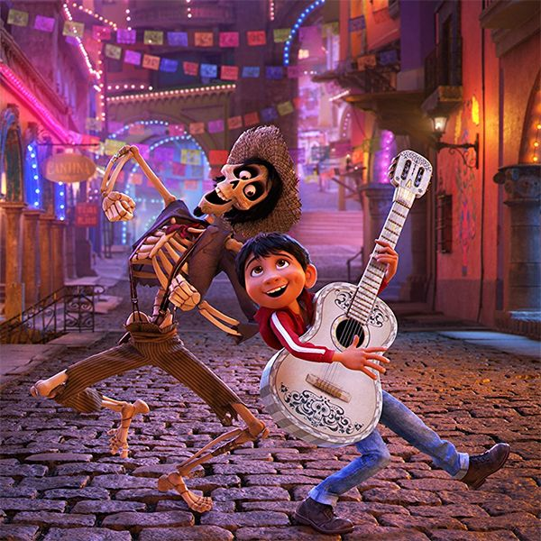
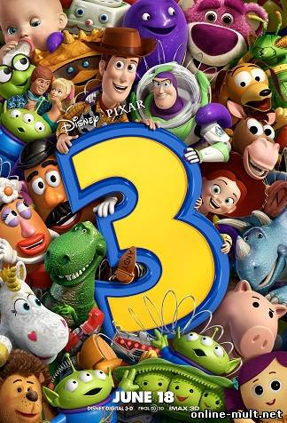
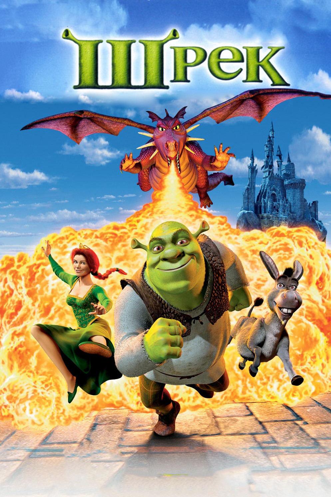
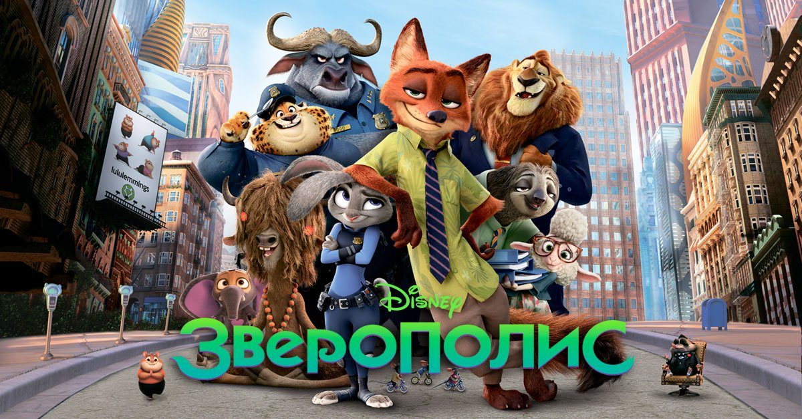

Унесенные призраками (2001)

На фоне всё большего развития компьютерной анимации классический мультфильм от легендарного Хаяо Миядзаки приобрёл неожиданную популярность. Он стал самым кассовым проектом в Японии и имел успех по всему миру. А в борьбе за «Оскар» творению Миядзаки удалось обойти такие хиты, как «Ледниковый период» и «Лило и Стич».
Узнать больше➔
Рататуй (2007)

Американский полнометражный анимационный фильм, комедия режиссёра Брэда Бёрда. Восьмой полнометражный фильм, созданный на студии Pixar.
На «Оскаре» с «Рататуем» конкурировал мультфильм «Лови волну» про пингвинов-сёрферов, явно копировавший идеи победителя прошлого года. Также в числе претендентов была работа Маржан Сатрапи «Персеполис» об исламской революции в Иране. Но премия ожидаемо ушла истории крысёнка.
Узнать больше➔
Суперсемейка (2004)

Впервые для студии Pixar главными героями стали люди. Новый мультфильм оказался настолько динамичным, что даже получил возрастные ограничения – детям рекомендуется смотреть «Суперсемейку» вместе с родителями. Но это не помешало собрать внушительную кассу, обойдя в борьбе за «Оскар» продолжение истории Шрека. А «Подводная братва», очень уж напоминающая «В поисках Немо», сразу жесчиталась аутсайдером в борьбе за приз.
Узнать больше➔
Холодное сердце (2013)

Disney долгое время пытался переосмыслить классическую «Снежную королеву» Ганса Христиана Андерсена. Но как сделать положительным главный персонаж? Ответом стало «Холодное сердце» и история принцессы Эльзы.
Мультфильм стал громким хитом, собрав в прокате более миллиарда долларов. Никто не сомневался в том, кому достанется «Оскар», хотя за него поборолся еще и Миядзаки со своим «Ветер крепчает».
Узнать больше➔
Головоломка (2015)

Авторы «Головоломки» решили нестандартным образом показать то, что происходит с нашими чувствами. Каждое из них получила оригинальную форму. Например, Радость напоминает звезду, Брезгливость – брокколи, а Печаль – слезу. В борьбе за «Оскар» у «Головоломки» нашелся серьезный конкурент – мрачный «Аномализ» Чарли Кауфмана. Но академики ожидаемо выбрали яркие чувства, да и бренд Pixar сам по себе уже гарантирует определенный уровень.
Узнать больше➔
ВАЛЛ-И (2008)

«WALL-E» оказался необычным мультфильмом. Тут затрагиваются глобальные вопросы экологии и отношения человечества к мусору. Этот подтекст не остался незамеченным академиками. Кроме заслуженного «Оскара» в номинации за лучший анимационный фильм «ВАЛЛ·И» был также номинирован в необычной для мультфильмов категории «Лучший оригинальный сценарий».
Узнать больше➔
Тайна Коко (2017)

Рассказать в мультфильме о смерти? Очень смелая попытка! К счастью, в Мексике есть самый настоящий культ,который и помог обеспечить основу этой истории. Аниматоры Pixar получили задачу рассказать о мире мертвых. Вызов принят! И пусть скелеты не совсем анатомичны, зато так они кажутся более живыми и интересными. Аниматорам даже пришлось заново создать алгоритм прорисовки одежды, ведь на костях она должна смотреться иначе, чем на обычном теле человека.
Но даже не техническая реализация обеспечила мультфильму успех. Куда интереснее сам сюжет. В детскую историю удалось вложить такие важные темы, как прощание с близкими и смерть. Мультфильм воспринимается оченьэмоционально и взрослыми, многие, не скрывая слез, плачут. В том году за приз боролся необычный мультфильм «Ван Гог. С любовью, Винсент», полностью нарисованный масляными красками, но перед чувствами «Тайны Коко» устоять было невозможно.
Узнать больше➔
История игрушек 3 (2010)

Обычно анимационные франшизы стараются не делать настолько большие паузы между частями. Все же вторая часть «Истории игрушек» вышла за 10 лет до третьей. Но в данном случае простой оказался полезным. Авторы нашли новые, удачные темы. Третья часть истории посвящена тому, как взрослеют дети и рефлексируют их опекуны.Неслучайно этот мультфильм особенно отмечают взрослые.
В тот год «Большой побег» тоже не только безоговорочно взял «своего» Оскара, но и был номинирован на звание лучше фильма. Но премию взяла драма «Король говорит».
Узнать больше➔
Шрек (2001)

Созданный Dreamworks Pictures мультфильм завоевал «Оскар» в новой номинации «Лучший полнометражный анимационный фильм», которая только появилась в 2002 году. «Шрек» пропитал сказку тонкой иронией, а герои оказываются вовсе не теми, кем кажутся. Да и основной персонаж тут вовсе не храбрый рыцарь, а зеленый огр. Такой нестандартный подход в связке с отличной на то время графикой дал возможность «Шреку» обойти другого фаворита – «Корпорацию монстров» от Pixar.
Узнать больше➔
Зверополис (2016)

Для Disney попытка очеловечить зверей не такой уж и эксперимент, можно вспомнить хотя бы «Робин Гуда» и «Цыпленка Цыпу». Населенный зверьми город стал местом, где закручивается небанальная детективная история. К тому же с помощью мультфильма создатели раскрывают совсем не детские темы – коррупцию, сегрегацию, отношения в трудовом коллективе. Именно поэтому на «Зверополис» идут и взрослые. Основным конкурентом ленты стала «Моана»,тоже от Disney.
Узнать больше➔